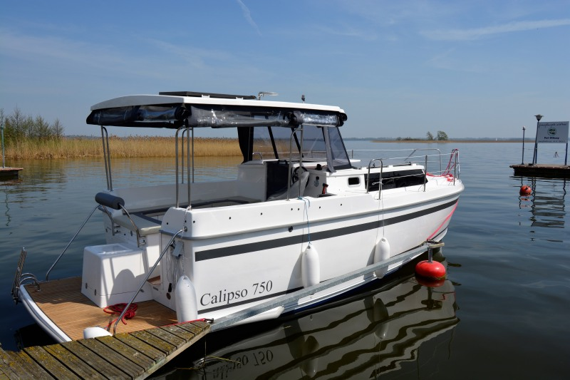
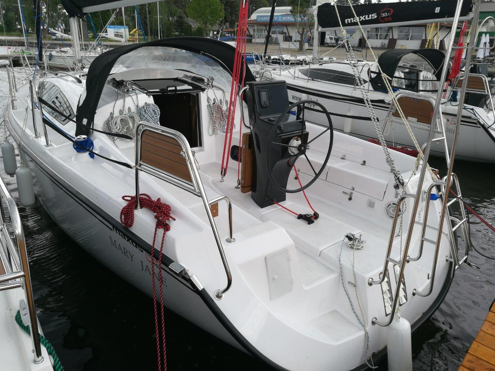
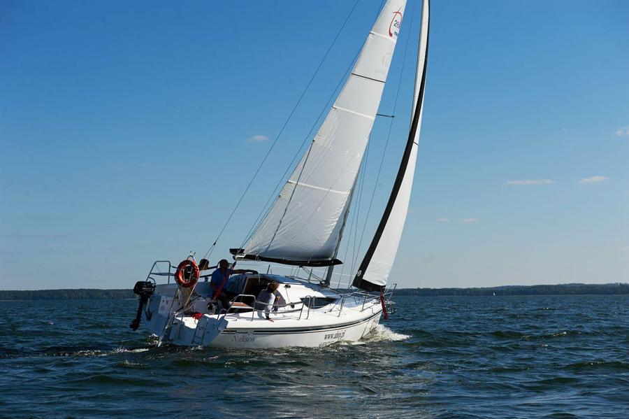
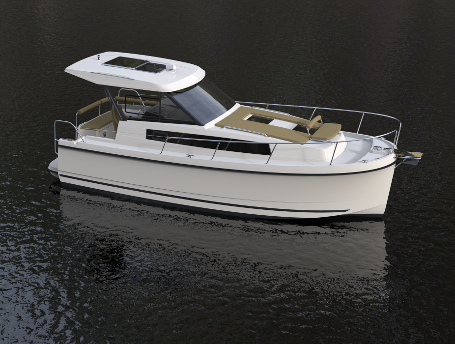

Motorowy - Calipso 750
Opis jachtu
Typ jachtu: Motorowy - Calipso 750
Rok produkcji: 2021
Ilość osób: 6
Układ koi: 4+2
Silnik: Mercury 30KM
Długość kadłuba: 7,50 m
Szerokość całkowita: 2,80 m
Zanurzenie maksymalne: 0,60 m
Zanurzenie minimalne: 0,60 m
Wysokość w kabinie: 1,90 m
Typ steru: głębinowy + koło
Maxus 33.1 RS
Opis jachtu
Typ jachtu: Maxus 33.1 RS
Rok produkcji: 2016
Ilość osób: 10
Układ koi: 8+2
Silnik: 20 KM MERKURY
Długość kadłuba: 9,95 m
Szerokość całkowita: 3,20 m
Zanurzenie maksymalne: 1,70 m
Zanurzenie minimalne: 0,40 m
Wysokość w kabinie: 1,95 m
Typ steru: głębinowy + koło
Maxus 28
Opis jachtu
Typ jachtu: Maxus 28
Rok produkcji: 2017
Ilość osób: 8
Układ koi: 6+2
Silnik: Tohatsu 6KM
Długość kadłuba: 8,45 m
Szerokość całkowita: 2,92 m
Zanurzenie maksymalne: 1,50 m
Zanurzenie minimalne: 0,45 m
Wysokość w kabinie: 1,85 m
Typ steru: płetwa na pawęży + rumpel
Motorowy - Nexus 870 Revo
Opis jachtu
Typ jachtu: Motorowy - Nexus 870 Revo
Rok produkcji: 2017
Ilość osób: 6
Układ koi: 4+2
Silnik: 25 KM
Długość kadłuba: 8,70 m
Szerokość całkowita: 2,90 m
Zanurzenie maksymalne: 0,40 m
Zanurzenie minimalne: 0,40 m
Wysokość w kabinie: 1,86 m
Typ steru: płetwa na pawęży + rumpel
Motorowy - Delphia 989 Platinum Flybridge
Opis jachtu

Typ jachtu: Motorowy - Delphia 989 Platinum Flybridge
Rok produkcji: 2017
Ilość osób: 7
Układ koi: 6+1
Silnik: Nanni 50KM
Długość kadłuba: 10,38 m
Szerokość całkowita: 3,50 m
Zanurzenie maksymalne: 0,50 m
Zanurzenie minimalne: 0,50 m
Wysokość w kabinie: 2,20 m
Typ steru: głębinowy + koło